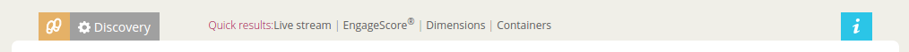

Five minute install¶
Contents
Steps in creating an account¶
You need a Useraccount and a Liquid account.
With a useraccount a user can have access to multiple Liquid Accounts. A Liquid Account is used to collect data. Collected data and profiles from one liquid account are seperated from another Liquid Account. Multiple users can have access to 1 Liquid account.
- First create a user login.
- Click the button above.
- Fill in your emailadress and capcha.
- You receive an email to confirm your emailadress.
- Click on the link in the email.
- Fill in your password.
- Now you have a useraccount you can create a liquid account.
- Fill in the name of your Liquid Account. Normally the organization name.
- Click next and you will receive your website script also in your mailbox.
If you continue you will see and empty Live Stream because the script is not yet on your website.
Warning
Untill you put the script on the website no data is being collected.
Collect data¶
When you create your liquid account you get the connection information for your website. You can now connect your website!
To connect your website the script has to be on every webpage a visitor can visit. There are several easy ways to do this.
- Put the script you received in your google tagmanager.
- Integrate the script in your template between the body tags.
- Send the email with script you received to a webdeveloper.
Note
- Websitescript
- Other Integrations
- Problems connecting? `Contact us`_
Are you connected?¶
You can check if you are connected by:
- Go to the website where you put the script
- Login your liquid account. You should see visitors in your Live Stream
Nothing visible in the Live Stream. Click on the button ‘Discovery’ in the top left of your screen. The discovery page will open. The first item on this page is Channels. Click on this icon. The page that will open shows you all the channels that are connected.
If nothing is there `Contact us`_.
If your website is grayed out. Hover over your website and click the edit button. Now you can activated your website. You can repeat this first two steps in this connection check.
Basic configuration¶
You’ve already done part of the basic configuration by creating your account and connecting your website. But now you want to get started building profiles and using them. Go to Five minute install.
Getting started¶
Initial steps to configure a new liquid account.
Before you start configuring your liquid account, make sure you have installed the script on your website.
See also
Normally when you How to login to IQNOMY, you will automaticly open your Liquid Account.
But is is also possible that you are Invite users to multiple liquid accounts or have created multiple liquid accounts. You can now choose the Liquid Account you want to open.
Opening a liquid account will open the live-stream of this liquid account.
See also
- Invite users
- liquid-account-overview explained
- add-new-liquid-account
- live-stream explained
Human Switch¶
For organizations working on the Human Switch, IQNOMY has build the IQNOMY platform.
Companies have more and more ways to communicate with their (potential) customers. Customers make use of different channels and devices. Companies lose contact with those customers, but there are also opportunities.
IQNOMY supports companies in getting to know their customers: The Human Switch
The IQNOMY platform is a SaaS solution build for the Human Switch. It has a foundation of 3 parts
- Connect
- Connect the companies communication channels
- Profile
- Build realtime richer customer profiles across those channels
- Move
- Create realtime personal and relevant interaction
To manage these services IQNOMY has created Liquid Account. This support document will help you understand the functionality available in your Liquid Account.
- Liquid Account
- The account that provides access to the services for connecting communication channels, collect and enrich profiles and personalize content.
How to use application¶
Main interface¶
The main menu brings you to the different applications in the IQNOMY platform.

- Campus
- The application to provide you with support for the IQNOMY platform.
- Your Liquid Account name
- Every liquid account has a unique number. Next to the number you can give your Liquid Account any name you want.
- Liquid Accounts
- One user can have access to multiple Liquid Accounts. For every liquid account different roles (owner, administrator or reporter) can be set.
- User account
- ‘My account’ You can change your user settings.
- Liquid account
- You can change the main settings of the Liquid Account you are managing at the moment.
- Logout
- Logout can be done by clicking this button or deleting all you cookies. After 8 hours after login you will automaticly logged out.
The liquid account submenu has the following functionalities
- Step by step
- This will link to the step by step pages. These pages will help you configuring your Liquid Account
- Discovery
- Links to the Discovery page
- Live stream
- Links to the Live stream page
- Engagescore
- Links to the Engagescore main screen
- Dimensions
- Links to the Dimensions main screen
- Containers
- Links to the Containers main screen
- Support
- The ‘i’ represents information. Searching with a keyword will bring you to the support page.
- The content screen
- Every content screen will show a title of the screen. Underneath this title the content of the screen will show.
Invite users¶
A user can have access to multiple liquid account and can invite other users to existing liquid accounts. If you get invited for your companies Liquid Account you can create your own user account.